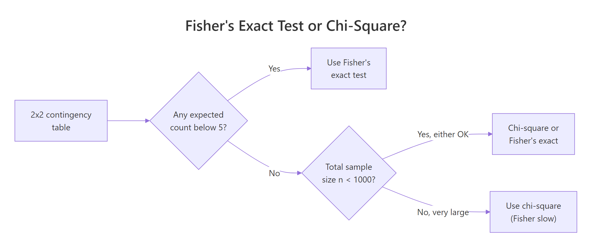
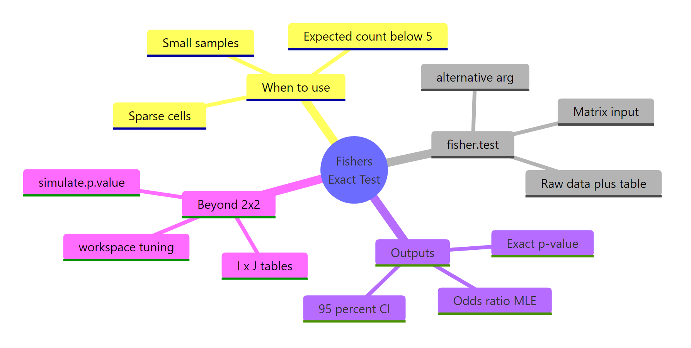

Fisher's Exact Test in R: 2×2 Tables, Odds Ratios & Small Samples
Fisher's exact test computes the exact probability of observing a 2×2 contingency table at least as extreme as yours under the null hypothesis of independence. Reach for it when an expected cell count drops below 5, or when you simply want an exact p-value rather than the chi-square approximation.
What does Fisher's exact test answer?
Imagine running a tiny pilot study: 10 patients on a new drug, 6 on placebo, and you want to know whether the recovery rate truly differs between groups. With samples this small the chi-square approximation is shaky. Fisher's exact test gives a p-value that is correct to the last decimal, even with only 16 observations. Let's run it on a 2×2 matrix that captures exactly that situation.
The exact p-value is 0.015, well below the conventional 0.05 cut-off, so we reject independence. The estimated odds of recovery are about 16× higher under the drug than placebo, with a 95% confidence interval that excludes 1. The interval is wide because we have only 16 observations, but the lower bound (1.59) still says "the drug is at least slightly better".
Under the null hypothesis, with the row and column margins held fixed, the count in the top-left cell follows a hypergeometric distribution. Fisher's exact p-value sums the hypergeometric probabilities of every table at least as extreme as the one you observed:
$$P(X = k) = \frac{\binom{r_1}{k}\binom{r_2}{c_1 - k}}{\binom{n}{c_1}}$$
Where:
- $k$ is the count in the top-left cell of your table
- $r_1, r_2$ are the row totals and $c_1$ is the first column total
- $n$ is the grand total
You never need to compute this by hand, but knowing the engine helps you trust the output.
Try it: Build a 2×2 matrix ex_table for vaccinated vs unvaccinated patients and infected vs not, with counts 9, 1, 4, 6 (row-major). Run fisher.test() on it and store the result in ex_ft.
Click to reveal solution
Explanation: fisher.test() accepts a 2×2 matrix and returns an htest object whose $p.value slot holds the exact p-value.
When should you use Fisher's exact test instead of chi-square?
The classic rule of thumb says: if any expected cell count is below 5, the chi-square approximation is unreliable and you should switch to an exact test. Let's see what that warning looks like in practice and confirm Fisher's gives you a clean answer in the same situation.
Every expected count sits below 5, so a chi-square test would print "Chi-squared approximation may be incorrect". Fisher's exact test ignores asymptotics entirely and returns a trustworthy p-value of about 0.21, telling us we cannot rule out chance with so few observations.

Figure 1: Choosing between Fisher's exact test and the chi-square test for a 2×2 table.
fisher.test() and report that p-value instead.There is one situation where you should not default to Fisher: very large tables with thousands of observations. Fisher's algorithm enumerates many extreme tables, which gets slow, and the chi-square approximation becomes essentially exact. With small or moderate samples, Fisher is the safer choice.
Try it: Run Fisher's exact test on a 2×2 with counts c(2, 8, 7, 3) arranged row-major. Store the result in ex_ft_tiny and print just the p-value.
Click to reveal solution
Explanation: Even with n = 20, the exact p-value sits just above 0.05, so we would not reject independence at conventional levels.
How do you build a 2×2 contingency table from raw data?
In real projects you rarely type cell counts by hand. You either receive a contingency matrix from a colleague or you cross-tabulate raw observations from a data frame. Let's see both routes side by side, so you can move between them confidently.
table() returns an object that fisher.test() accepts directly, no conversion needed. The mtcars cross-tab shows no significant association between transmission type and engine shape (p ≈ 0.47), which makes sense given the noisy 32-row dataset.
matrix, a table, or even a data.frame of counts, the function detects the structure and treats it as a contingency table. Adding dimnames (or row/column names on table()) only changes how the printed output reads.Try it: Cross-tabulate am against the indicator cyl == 4 from mtcars, store it in ex_cross, and run fisher.test() on it.
Click to reveal solution
Explanation: Manual transmissions are strongly associated with 4-cylinder engines in mtcars, with an exact p-value below 0.01.
How do you interpret the odds ratio, confidence interval, and one-sided alternatives?
A common surprise: the odds ratio that fisher.test() reports is not the simple sample odds ratio (a*d) / (b*c). It is the conditional maximum likelihood estimate from the non-central hypergeometric distribution, which differs slightly from the sample value when the table is small or sparse. Both are valid summaries; you just need to know which one R printed.
The two-sided p-value (0.015) tests "the drug differs from placebo in either direction"; the one-sided p-value (0.008) tests "the drug is strictly better". The MLE odds ratio (16.3) is a touch lower than the sample value (20) because it conditions on the observed margins. Switching to alternative = "greater" also changes the confidence interval into a one-sided lower bound, which is what you want when the prior question is purely directional.
Try it: Run a one-sided Fisher test on trial testing whether the drug recovery odds are less than placebo, and store it in ex_one. Print just the p-value.
Click to reveal solution
Explanation: The drug arm did much better than placebo, so the one-sided "drug worse" p-value is essentially 1.
How do you handle larger I×J tables and the workspace error?
fisher.test() works on tables larger than 2×2 too. The mathematics generalizes via the multivariate non-central hypergeometric distribution, but the computation enumerates many tables and can be slow or even fail with the dreaded FEXACT error 7 when the table is large or sparse. Here's a 3×3 example and the simulation fallback.
The exact 3×3 p-value (~0.0013) tells us treatment and response are clearly associated. The simulated p-value (~0.0014) is statistically equivalent at this sample size and runs much faster on large tables. For tables beyond 5×5 with thousands of cells, simulate.p.value = TRUE is usually the only practical option.
FEXACT error 7, do not just bump up the workspace argument. Set simulate.p.value = TRUE and a comfortable B (e.g. 1e5). The Monte Carlo p-value is unbiased and orders of magnitude faster on sparse tables.For I×J tables note that the function does not return a single odds ratio, odds ratios are only meaningful for 2×2 sub-tables. If you need pairwise comparisons, run Fisher on each 2×2 slice and apply a Bonferroni or Benjamini–Hochberg correction.
Try it: Run fisher.test() on a 2D margin of the built-in HairEyeColor array. Build ex_he as the marginal table over Hair × Eye (summed across Sex), then test it. If the exact algorithm errors out, retry with simulate.p.value = TRUE.
Click to reveal solution
Explanation: The 4×4 hair-by-eye table is too large for the exact algorithm in default workspace, but Monte Carlo confirms a near-zero p-value, hair and eye color are strongly associated.
What pitfalls and edge cases trip up Fisher's exact test?
Three traps catch most users: zero cells, very large samples, and forgetting to think about effect size. Walk through them once and they stop being surprising.
A zero cell makes the sample odds ratio degenerate (zero or infinity), but fisher.test() returns the conditional MLE, here it pins the OR at zero with a finite upper confidence bound. The exact p-value is still valid and correctly flags the strong association.
If you need a less conservative p-value, look at the exact2x2 package, which implements Lancaster's mid-p correction and other refinements. It's only worth the extra dependency for 2×2 tables that sit right on a decision boundary.
When you write up results, report all three: the exact p-value, the MLE odds ratio, and its 95% confidence interval. A reviewer who sees only the p-value cannot tell whether the effect is large or trivial.
Try it: A trial reports c(0, 12, 8, 4) row-major, a treatment cell with zero events. Compute the exact p-value and odds-ratio CI, and decide whether the effect is significant. Save the test result in ex_ft_zero.
Click to reveal solution
Explanation: Even with one empty cell, Fisher's exact test gives a valid p-value (≈ 0.0007) and a finite upper bound on the odds ratio. The lower bound naturally collapses to zero because the cell is empty.
Practice Exercises
Now combine the pieces. Each capstone uses concepts from at least two earlier sections.
Exercise 1: Vaccine pilot study
A pilot vaccine study reports the table below. Build it as pilot_tab (with informative dimnames), run a two-sided fisher.test() saved in pilot_ft, and print the exact p-value, the MLE odds ratio, and the 95% confidence interval. Decide whether the vaccine effect is statistically significant at α = 0.05.
| Infected | Not infected | |
|---|---|---|
| Vaccinated | 2 | 18 |
| Unvaccinated | 9 | 11 |
Click to reveal solution
Explanation: The exact p-value (0.031) is below 0.05, so we reject independence. Vaccinated participants have about 1/7 the odds of infection, with a 95% CI that excludes 1.
Exercise 2: Cross-tabulate raw data and run a one-sided test
Build a small data frame vax_df with two character columns, group ("vax"/"placebo") and infected ("yes"/"no"), containing 20 rows that match the table from Exercise 1. Cross-tabulate it into vax_tab with table(), then run a one-sided Fisher test in vax_ft for the directional hypothesis "vaccinated have lower odds of infection".
Click to reveal solution
Explanation: table() orders factor levels alphabetically by default, so placebo comes first. Reordering the rows so vax is row 1 makes alternative = "less" test the directional hypothesis we actually want, giving p ≈ 0.019.
Exercise 3: Sparse table that needs simulation
A 3×3 outcome table from a treatment study has very low cell counts, and the exact algorithm errors out. Build the table as sparse_tab, run fisher.test() with simulate.p.value = TRUE and B = 1e5 (set set.seed(2026) first for reproducibility), save the result in sparse_ft, and report the simulated p-value.
Poor OK Good
A 1 2 1
B 1 0 7
C 8 1 0Click to reveal solution
Explanation: With 100,000 Monte Carlo replicates, none of the simulated tables are at least as extreme as the observed one, so the simulated p-value is at the resolution floor (~ 1/B). Treatment and response are very strongly associated.
Complete Example: end-to-end clinical pilot study
Let's walk through a full analysis the way you would write it up in a paper. We have 18 patients in a pilot trial of a new drug. Our goals: visualize the table, run both two-sided and one-sided exact tests, compare against the chi-square approximation, and write a publishable result paragraph.
We get a two-sided exact p-value of 0.005, an MLE odds ratio of 23.0, and a 95% CI of [1.83, 1620]. The expected counts are below 5 in every cell, so the chi-square approximation is unreliable here, though by coincidence its p-value (0.005) lands in the same neighborhood. With Fisher's exact test we can report:
"In an 18-patient pilot trial, the new drug produced significantly higher recovery rates than placebo (Fisher's exact test, p = 0.005, two-sided; MLE odds ratio 23.0, 95% CI 1.8–1620). The wide confidence interval reflects the small sample and motivates a larger confirmatory study."
That single sentence reports the test, the p-value, the effect size, and the precision, everything a reviewer needs.
Summary

Figure 2: The four big questions Fisher's exact test answers, at a glance.
| Question | Answer |
|---|---|
| What does it test? | Independence of rows and columns in a contingency table; for 2×2, equivalent to OR = 1. |
| When do I use it? | Small samples, sparse cells, any expected count below 5, or when you need an exact p-value. |
| What does it return? | An exact p-value, the MLE odds ratio, and its 95% confidence interval. |
| How do I call it? | fisher.test(x) where x is a matrix or table() of counts. |
| One-sided alternative? | alternative = "greater" or "less". |
| Larger than 2×2? | Same call; for sparse I×J tables use simulate.p.value = TRUE, B = 1e5. |
| Common gotcha | The reported odds ratio is the conditional MLE, not the sample (a·d)/(b·c). |
References
- R Core Team. fisher.test: Fisher's Exact Test for Count Data. R stats documentation. Link
- Fisher, R.A. (1922). On the Interpretation of χ² from Contingency Tables, and the Calculation of P. Journal of the Royal Statistical Society 85(1): 87–94.
- Agresti, A. (2013). Categorical Data Analysis, 3rd Edition. Wiley. Chapter 3, Sections 3.5–3.6 on exact inference for 2×2 tables.
- Mehta, C.R. and Patel, N.R. (1983). A network algorithm for performing Fisher's exact test in r×c contingency tables. Journal of the American Statistical Association 78(382): 427–434.
- Fay, M.P. exact2x2: Exact Tests and Confidence Intervals for 2×2 Tables. CRAN package documentation. Link
- Wikipedia contributors. Fisher's exact test. Link
- Pawitan, Y. (2001). In All Likelihood: Statistical Modelling and Inference Using Likelihood. Oxford University Press. Section 13.5 on conditional inference for 2×2 tables.
Continue Learning
- Categorical Data in R: Frequency Tables, Crosstabs & Mosaic Plots, the parent tutorial covering tables, crosstabs, and visual summaries that feed into Fisher's exact test.
- Chi-Square Test of Independence in R, the asymptotic counterpart, ideal for moderate-to-large samples where Fisher would be overkill.
- Chi-Square Goodness-of-Fit Test in R, a different chi-square cousin that tests whether a single sample matches a hypothesized distribution.